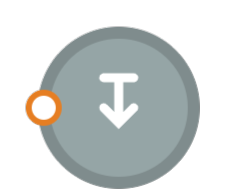
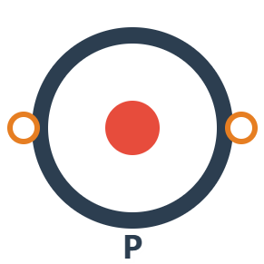
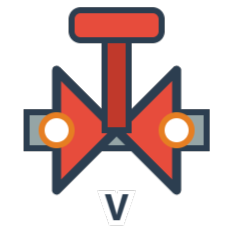

Fronteiras

Saída (Out)Equipamentos

Bomba Centrífuga
Válvula de Controle▶
◀
Propriedades
Para ver as propriedades de um componente, clique nele.
Use o scroll do mouse para zoom e arraste segurando Espaço para navegar. Aperte DEL para deletar um componente e CLIQUE DUPLO para editar. Você pode também desconectar componentes usando CLIQUE DUPLO nas setas.

Saída (Out)
Bomba Centrífuga
Válvula de ControlePara ver as propriedades de um componente, clique nele.